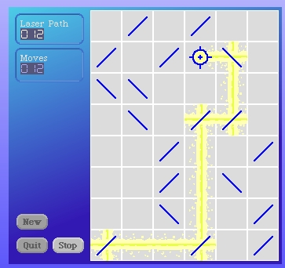
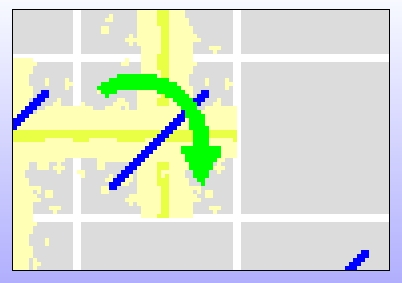

Check the results.
 Note that I made the magnifaction morph a lot larger to be able to see the entire contents of a mirror cell at once.
I like a couple of things I see here. The laser beam drawings end exactly half-way through the border surrounding our cells. That's great. It also looks like we will have to change how we draw the center beams so that they are both drawn last, but before the mirror is redrawn.
Try this simple change in our MirrorCellRenderer and observe the results.
renderLaser
self cell isOff ifTrue: [^self].
self renderLaserVertical.
self renderLaserHorizontal.
self renderLaserVerticalCenter.
self renderMirror.
The enlarged view confirms that our laser beams are not properly centered in the cells.